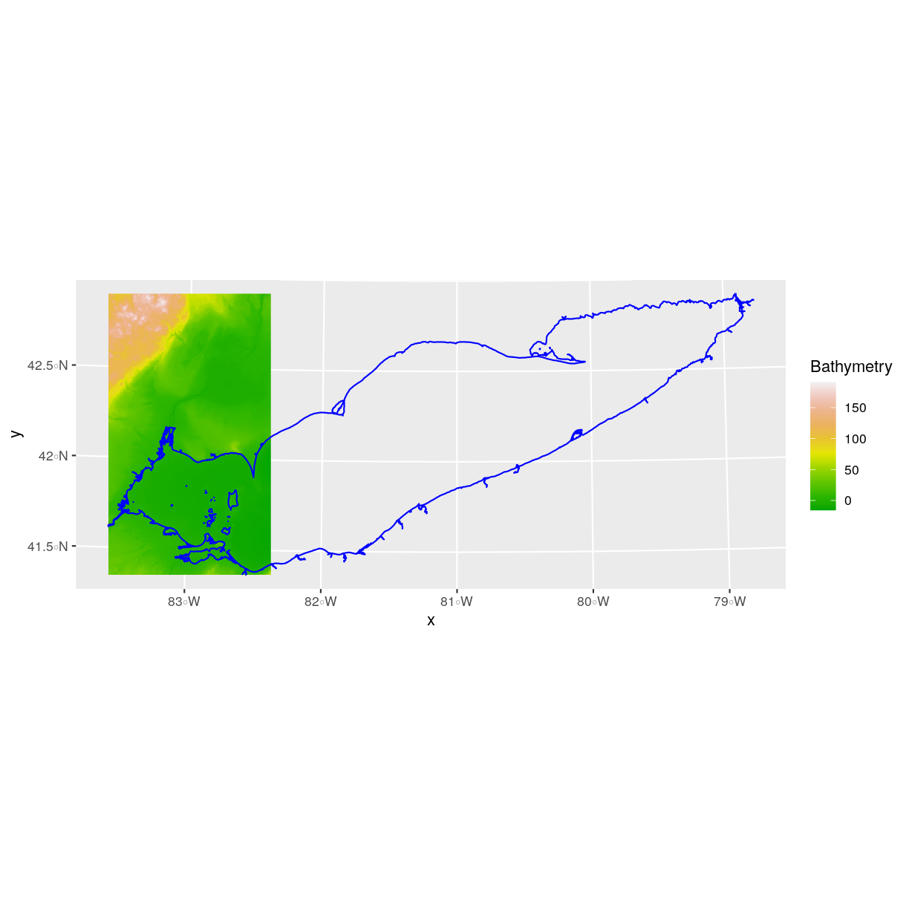

Manipulate Raster Data in R
Overview
Teaching: 40 min
Exercises: 20 minQuestions
How can I crop raster objects to vector objects, and extract the summary of raster pixels?
Objectives
Crop a raster to the extent of a vector layer.
Extract values from a raster that correspond to a vector file overlay.
## Loading required package: sp
## Linking to GEOS 3.8.0, GDAL 3.0.2, PROJ 6.2.1
## Error in .local(.Object, ...) :
## Error in .rasterObjectFromFile(x, band = band, objecttype = "RasterLayer", : Cannot create a RasterLayer object from this file. (file does not exist)
Things You’ll Need To Complete This Episode
See the lesson homepage for detailed information about the software, data, and other prerequisites you will need to work through the examples in this episode.
This episode explains how to crop a raster using the extent of a vector shapefile. We will also cover how to extract values from a raster that occur within a set of polygons, or in a buffer (surrounding) region around a set of points.
Crop a Raster to Vector Extent
We often work with spatial layers that have different spatial extents. The spatial extent of a shapefile or R spatial object represents the geographic “edge” or location that is the furthest north, south east and west. Thus is represents the overall geographic coverage of the spatial object.
 Image Source: National
Ecological Observatory Network (NEON)
Image Source: National
Ecological Observatory Network (NEON)
The graphic below illustrates the extent of several of the spatial layers that we have worked with in this workshop:
- Area of interest (AOI) – blue
- Roads and trails – purple
- Vegetation plot locations (marked with white dots)– black
- A Bathymetry model (CHM) in GeoTIFF format – green

Frequent use cases of cropping a raster file include reducing file size and creating maps. Sometimes we have a raster file that is much larger than our study area or area of interest. It is often more efficient to crop the raster to the extent of our study area to reduce file sizes as we process our data. Cropping a raster can also be useful when creating pretty maps so that the raster layer matches the extent of the desired vector layers.
Crop a Raster Using Vector Extent
We can use the crop() function to crop a raster to the extent of another
spatial object. To do this, we need to specify the raster to be cropped and the
spatial object that will be used to crop the raster. R will use the extent of
the spatial object as the cropping boundary.
To illustrate this, we will crop the Bathymetry Model (CHM) to only include the area of interest (AOI). Let’s start by plotting the full extent of the CHM data and overlay where the AOI falls within it. The boundaries of the AOI will be colored blue, and we use fill = NA to make the area transparent.
ggplot() +
geom_raster(data = erie_bathy_df, aes(x = x, y = y, fill = erie_bathy)) +
scale_fill_gradientn(name = "Bathymetry", colors = terrain.colors(10)) +
geom_sf(data = erie_outline, color = "blue", fill = NA) +
coord_sf()

Now that we have visualized the area of the Lake Erie we want to subset, we can
perform the cropping operation. We are going to create a new object with only
the portion of the Lake Erie data that falls within the boundaries of the AOI. The function crop() is from the raster package and doesn’t know how to deal with sf objects. Therefore, we first need to convert erie_outline from a sf object to “Spatial” object.
erie_bathy_Cropped <- crop(x = erie_bathy, y = as(erie_outline, "Spatial"))
Now we can plot the cropped Lake Erie data, along with a boundary box showing the full
Lake Erie extent. However, remember, since this is raster data, we need to convert to
a data frame in order to plot using ggplot. To get the boundary box from Lake Erie,
the st_bbox() will extract the 4 corners of the rectangle that encompass all
the features contained in this object. The st_as_sfc() converts these 4
coordinates into a polygon that we can plot:
erie_bathy_Cropped_df <- as.data.frame(erie_bathy_Cropped, xy = TRUE)
ggplot() +
geom_sf(data = st_as_sfc(st_bbox(erie_bathy)), fill = "green",
color = "green", alpha = .2) +
geom_raster(data = erie_bathy_Cropped_df,
aes(x = x, y = y, fill = erie_bathy)) +
scale_fill_gradientn(name = "Bathymetry", colors = terrain.colors(10)) +
coord_sf()

The plot above shows that the full Lake Erie extent (plotted in green) is much larger
than the resulting cropped raster. Our new cropped Lake Erie now has the same extent
as the erie_outline object that was used as a crop extent (blue border
below).
ggplot() +
geom_raster(data = erie_bathy_Cropped_df,
aes(x = x, y = y, fill = erie_bathy)) +
geom_sf(data = erie_outline, color = "blue", fill = NA) +
scale_fill_gradientn(name = "Bathymetry", colors = terrain.colors(10)) +
coord_sf()

We can look at the extent of all of our other objects for this field site.
st_bbox(erie_bathy)
xmin ymin xmax ymax
245701 4536578 754369 4767088
st_bbox(erie_bathy_Cropped)
xmin ymin xmax ymax
285721 4580238 682057 4753028
st_bbox(erie_outline)
xmin ymin xmax ymax
285728.3 4580281.1 682178.4 4752964.4
st_bbox(fish_locations)
xmin ymin xmax ymax
319537.0 4609584.5 439213.4 4679545.8
Our plot location extent is not the largest but is larger than the AOI Boundary. It would be nice to see our vegetation plot locations plotted on top of the Bathymetry Model information.
Challenge: Crop to Vector Points Extent
- Crop the Bathymetry Model to the extent of the study plot locations.
- Plot the vegetation plot location points on top of the Bathymetry Model.
Answers
CHM_plots_HARVcrop <- crop(x = erie_bathy, y = as(fish_locations, "Spatial")) CHM_plots_HARVcrop_df <- as.data.frame(CHM_plots_HARVcrop, xy = TRUE) ggplot() + geom_raster(data = CHM_plots_HARVcrop_df, aes(x = x, y = y, fill = HARV_chmCrop)) + scale_fill_gradientn(name = "Bathymetry", colors = terrain.colors(10)) + geom_sf(data = fish_locations) + coord_sf()Error in FUN(X[[i]], ...): object 'HARV_chmCrop' not found

In the plot above, created in the challenge, all the vegetation plot locations (black dots) appear on the Bathymetry Model raster layer except for one. One is situated on the blank space to the left of the map. Why?
A modification of the first figure in this episode is below, showing the
relative extents of all the spatial objects. Notice that the extent for our
vegetation plot layer (black) extends further west than the extent of our CHM
raster (bright green). The crop() function will make a raster extent smaller, it
will not expand the extent in areas where there are no data. Thus, the extent of our
vegetation plot layer will still extend further west than the extent of our
(cropped) raster data (dark green).
Define an Extent
So far, we have used a shapefile to crop the extent of a raster dataset.
Alternatively, we can also the extent() function to define an extent to be
used as a cropping boundary. This creates a new object of class extent. Here we
will provide the extent() function our xmin, xmax, ymin, and ymax (in that
order).
new_extent <- extent(285729, 385729, 4580282, 4752964)
class(new_extent)
[1] "Extent"
attr(,"package")
[1] "raster"
Data Tip
The extent can be created from a numeric vector (as shown above), a matrix, or a list. For more details see the
extent()function help file (?raster::extent).
Once we have defined our new extent, we can use the crop() function to crop
our raster to this extent object.
erie_bathy_manual_cropped <- crop(x = erie_bathy, y = new_extent)
To plot this data using ggplot() we need to convert it to a dataframe.
erie_bathy_manual_cropped_df <- as.data.frame(erie_bathy_manual_cropped,
xy = TRUE)
Now we can plot this cropped data. We will show the AOI boundary on the same plot for scale.
ggplot() +
geom_raster(data = erie_bathy_manual_cropped_df,
aes(x = x, y = y, fill = erie_bathy)) +
scale_fill_gradientn(name = "Bathymetry", colors = terrain.colors(10)) +
geom_sf(data = erie_outline, color = "blue", fill = NA) +
coord_sf()

Extract Raster Pixels Values Using Vector Polygons
Often we want to extract values from a raster layer for particular locations - for example, Lake Erie management zones that we are sampling. We can extract all pixel values within 20m of our x,y point of interest. These can then be summarized into some value of interest (e.g. mean, maximum, total).

To do this in R, we use the extract() function. The extract() function
requires:
- The raster that we wish to extract values from,
- The vector layer containing the polygons that we wish to use as a boundary or boundaries,
- we can tell it to store the output values in a data frame using
df = TRUE. (This is optional, the default is to return a list, NOT a data frame.) .
We will begin by extracting all bathymetry pixel values located within our
erie_outline polygon.
erie_bathy <- extract(x = erie_bathy,
y = as(erie_outline, "Spatial"),
df = TRUE)
str(erie_bathy)
'data.frame': 253082 obs. of 2 variables:
$ ID : num 1 1 1 1 1 1 1 1 1 1 ...
$ erie_bathy: num -1.933 -2.968 -2.79 -3.23 0.333 ...
When we use the extract() function, R extracts the value for each pixel located
within the boundary of the polygon being used to perform the extraction - in
this case the erie_outline object (a single polygon). Here, the
function extracted values from 18,450 pixels.
We can create a histogram of depth values within the boundary to better
understand the structure or height distribution of trees at our site. We will
use the column layer from our data frame as our x values, as this column
represents the depths for each pixel.
ggplot() +
geom_histogram(data = erie_bathy, aes(x = erie_bathy)) +
ggtitle("Histogram of CHM Height Values (m)") +
xlab("Depth") +
ylab("Frequency of Pixels")
`stat_bin()` using `bins = 30`. Pick better value with `binwidth`.
We can also use the
summary() function to view descriptive statistics including min, max, and mean
height values. These values help us better understand vegetation at our field
site.
summary(erie_bathy$erie_bathy)
Min. 1st Qu. Median Mean 3rd Qu. Max.
-62.48 -21.50 -18.62 -17.94 -11.58 37.32
Summarize Extracted Raster Values
We often want to extract summary values from a raster. We can tell R the type
of summary statistic we are interested in using the fun = argument. Let’s extract
a mean height value for our AOI. Because we are extracting only a single number, we will
not use the df = TRUE argument.
mean_erie_bathy_AOI <- extract(x = erie_bathy,
y = as(erie_outline, "Spatial"),
fun = mean)
Error in (function (classes, fdef, mtable) : unable to find an inherited method for function 'extract' for signature '"data.frame", "SpatialPolygonsDataFrame"'
mean_erie_bathy_AOI
Error in eval(expr, envir, enclos): object 'mean_erie_bathy_AOI' not found
It appears that the mean height value, extracted from our LiDAR data derived Bathymetry model is 22.43 meters.
Extract Data using x,y Locations
We can also extract pixel values from a raster by defining a buffer or area
surrounding individual point locations using the extract() function. To do this
we define the summary argument (fun = mean) and the buffer distance (buffer = 20)
which represents the radius of a circular region around each point. By default, the units of the
buffer are the same units as the data’s CRS. All pixels that are touched by the buffer region are included in the extract.

Source: National Ecological Observatory Network (NEON).
Let’s put this into practice by figuring out the mean depth in the
20m around the tower location (point_HARV). Because we are extracting only a single number, we
will not use the df = TRUE argument.
mean_erie_zone1 <- extract(x = erie_bathy,
y = as(erie_zones[1,], "Spatial"),
fun = mean)
Error in (function (classes, fdef, mtable) : unable to find an inherited method for function 'extract' for signature '"data.frame", "SpatialPolygonsDataFrame"'
mean_erie_zone1
Error in eval(expr, envir, enclos): object 'mean_erie_zone1' not found
Challenge: Extract Raster Height Values For Plot Locations
1) Use the plot locations object (
fish_locations) to extract an average depth for the area within 20m of each vegetation plot location in the study area. Because there are multiple plot locations, there will be multiple averages returned, so thedf = TRUEargument should be used.2) Create a plot showing the mean depth of each area.
Answers
# extract data at each plot location # mean_erie_bathy_plots_HARV <- extract(x = erie_bathy, # y = as(fish_locations, "Spatial"), # buffer=20, # fun = mean, # df = TRUE) # view data # mean_erie_bathy_plots_HARV # plot data # ggplot(data = mean_erie_bathy_plots_HARV, aes(ID, HARV_chmCrop)) + # geom_col() + # ggtitle("Mean Depth at each Plot") + # xlab("Plot ID") + # ylab("Depth (m)")
Key Points
Use the
crop()function to crop a raster object.Use the
extract()function to extract pixels from a raster object that fall within a particular extent boundary.Use the
extent()function to define an extent.